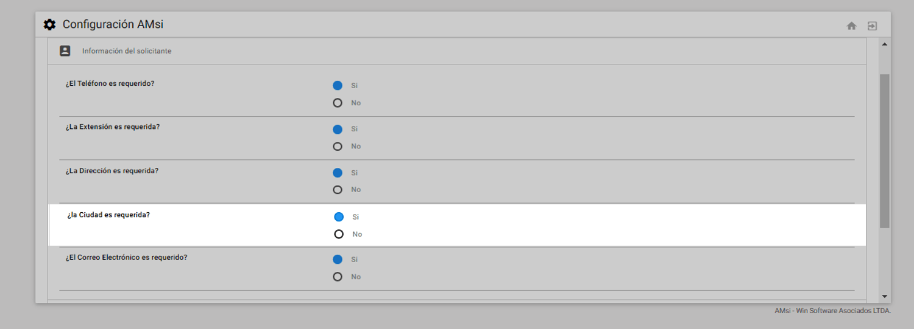
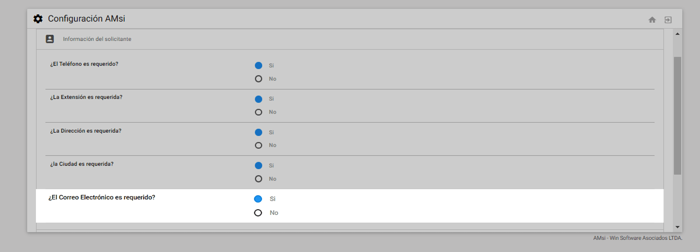
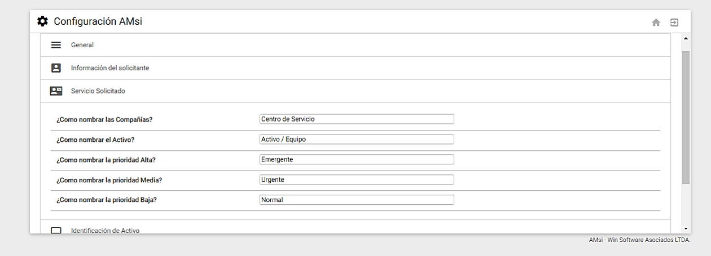
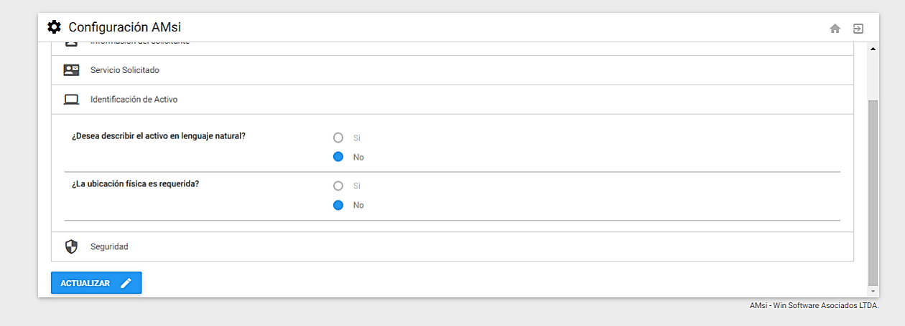
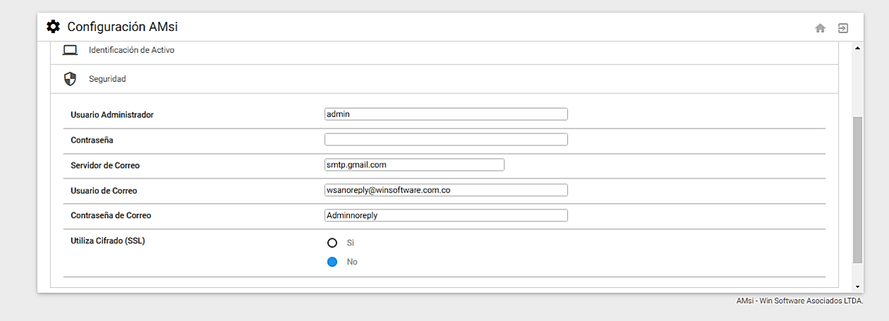
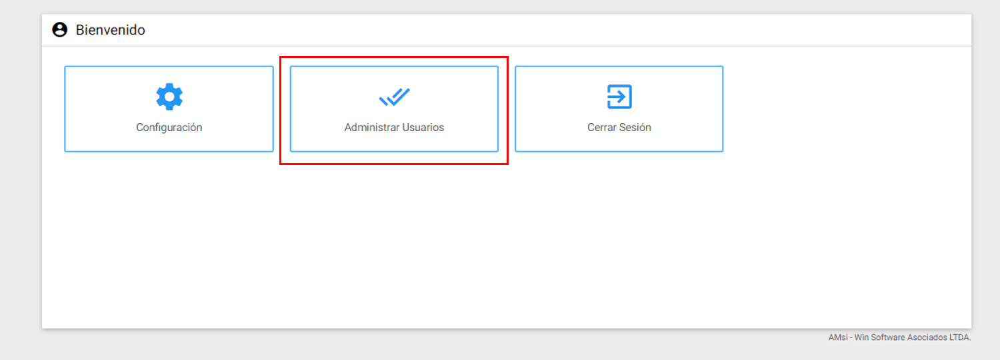
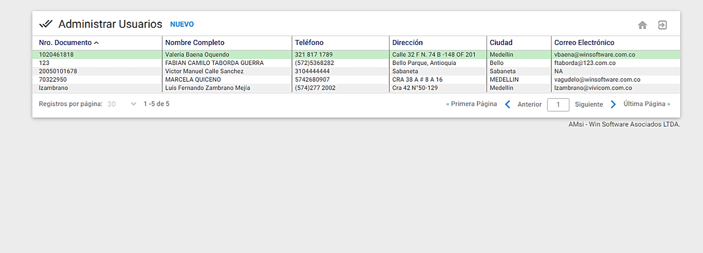

Se define el acceso al aplicativo y comandos del menú principal para el Administrador del sistema. Se configuran criterios, preferencias, particularidades y modos de visualización de la información en los formularios básicos del aplicativo al igual que los permisos, parametrización y administración de los usuarios de AMsi.
En esta sección
- Acceso al modo Configuración
- Ventana de Menú Principal del Usuario Administrador
- Configuración General
Acceso al modo Configuración
Como se indicó al inicio, sólo el Administrador encargado del AMsi puede acceder a esta sección del aplicativo. WIN Software suministra los datos de acceso una vez se instale el aplicativo en la Infraestructura del Cliente.
Para poder ingresar a la configuración de AMsi , el Administrador debe conocer el nombre de usuario y contraseña del Administrador del aplicativo. Tales datos se ingresan en la siguiente ventana de acceso:
 Imagen 54. AMsi - Inicio
Imagen 54. AMsi - Inicio
Una vez se ingrese, se puede observar el Menú Principal del Usuario Administrador del AMsi .
Ventana de Menú Principal del Usuario Administrador
La ventana de Menú Principal del Usuario Administrador muestra las transacciones que el usuario puede realizar a través del AMsi.
 Imagen 55. AMsi - Menú Principal
A continuación, se describen las transacciones que componen esta ventana.
Configuración: Esta opción permite configurar los criterios, preferencias, particularidades y modos de visualización sobre la información disponible en los formularios del aplicativo y parametrización general de envío de SS u OTs desde AMsi a AM.
Administrar Usuarios: Esta opción permite la creación de los usuarios que deben tener acceso a la aplicación.
Cerrar Sesión: Esta opción se usa para salir de AMsi.
Configuración
Una vez se ingrese con los datos del usuario administrador, se debe dar clic a este botón ubicado en la ventana de Menú Principal para continuar con la Configuración de AMsi.
 Imagen 56. AMsi - Configuración
Los componentes de la ventana de Configuración General son los que se muestran a continuación.Sobre cada uno se da una breve explicación:
 Imagen 57. AMsi - Ir a Configuración
Botón Inicio : Este botón lleva a la ventana de Menú Principal del Usuario Administrador.
Botón Cerrar Sesión : Este botón permite salir del aplicativo AMsi.
General
 Imagen 58. AMsi - General
Mensaje en la ventana de registro de la solicitud: En este campo se digita un mensaje que se desliza y aparece en la parte superior del formulario del Servicio a Solicitar. Es de utilidad para dar información en caso de que el usuario tenga inquietudes.
Generar automáticamente Órdenes al guardar la solicitud: Marcar SI indica que el aplicativo se usa para la creación de Órdenes de Trabajo en lugar de crear Solicitudes de Servicio. En tal caso, los botones de Crear Nueva Solicitud y Consultar Mis Solicitudes cambian a Crear Nueva Orden y Consultar Mis Ordenes respectivamente. El sistema entonces cambia su funcionalidad para Crear y Consultar Órdenes de Trabajo.
Solicitar fecha tentativa de entrega: Marcar SI, permite mostrar el campo para ingresar la fecha en el formulario del Servicio a Solicitar con el fin de que el usuario solicitante sugiera una solución tentativa del servicio.
Preguntar Si Activo se entrega limpio a Mantenimiento: Marcar SI, permite activar/desactivar un switche en el formulario del Servicio a Solicitar para que el usuario marque si es un Activo que se entrega limpio al área de mantenimiento.
Relacionar Usuarios Por Centro de Costo: De marcar la opción NO, todos los usuarios que se administran (crear o modificar) quedan relacionados por compañía, es decir, en el formulario del Servicio a Solicitar se listan los Activos de la compañía.
Información del Solicitante
En esta ventana se configuran los campos que serán exigidos en la sección Datos del Solicitante, bien sea para crear un nuevo Usuario o cuando se vaya a Actualizar el Perfil. Los componentes de la ventana de Información del Solicitante son los que se muestran a continuación. Sobre cada componente se da una breve explicación:
 Imagen 59. AMsi - Información Solicitante
¿El Teléfono es requerido?: Marcar SI indica que este campo es obligatorio y se identifican con un asterisco * de color rojo entre paréntesis que antecede el nombre del campo. Además, indica que debe ser llenado por los usuarios. Marcar NO implica dejar el campo a manera opcional de diligenciamiento para el solicitante al momento de actualizar la información dese Actualizar Perfil o para el usuario administrador al momento de crear y actualizar los usuarios.
¿La Extensión es requerida?: Marcar SI indica que este campo es obligatorio y se identifican con un asterisco * de color rojo entre paréntesis que antecede el nombre del campo. Además, indica que debe ser llenado por los usuarios. Marcar NO implica dejar el campo a manera opcional de diligenciamiento para el solicitante al momento de actualizar la información dese Actualizar Perfil o para el usuario administrador al momento de crear y actualizar los usuarios.
¿La Dirección es requerida?: Marcar SI indica que este campo es obligatorio y se identifican con un asterisco * de color rojo entre paréntesis que antecede el nombre del campo. Además, indica que debe ser llenado por los usuarios. Marcar NO implica dejar el campo a manera opcional de diligenciamiento para el solicitante al momento de actualizar la información dese Actualizar Perfil o para el usuario administrador al momento de crear y actualizar los usuarios.
¿La Ciudad es requerida?: Marcar SI indica que este campo es obligatorio y se identifican con un asterisco * de color rojo entre paréntesis que antecede el nombre del campo. Además, indica que debe ser llenado por los usuarios. Marcar NO implica dejar el campo a manera opcional de diligenciamiento para el solicitante al momento de actualizar la información dese Actualizar Perfil o para el usuario administrador al momento de crear y actualizar los usuarios.
¿El Correo Electrónico es requerido?: Marcar SI indica que este campo es obligatorio y se identifican con un asterisco * de color rojo entre paréntesis que antecede el nombre del campo. Además, indica que debe ser llenado por los usuarios. Marcar NO implica dejar el campo a manera opcional de diligenciamiento para el solicitante al momento de actualizar la información desde Actualizar Perfil o para el usuario administrador al momento de crear y actualizar los usuarios.
Servicio Solicitado
En esta ventana se configuran los campos que serán exigidos en la sección Servicio Solicitado. Los componentes de la ventana de Servicio Solicitado son los que se muestran a continuación. Sobre cada componente se da una breve explicación.
 Imagen 60. AMsi - Formulario Servicio Solicitado
Imagen 60. AMsi - Formulario Servicio Solicitado
¿Cómo nombrar las compañías?: Se refiere a los nombres de las Compañías creadas en el AM, es decir, los Centros de Servicio responsables de las diferentes actividades de mantenimiento del Cliente. Por defecto ellas son nombradas como Centro de Servicio y pueden ser renombradas a gusto según la cultura del Cliente.
¿Cómo nombrar el Activo?: Se refiere al nombre del campo que describe el Activo/Equipo que es objeto del servicio en la OT y/o SS. Por defecto ellos son nombrados Activo / Equipo y puede ser cambiado a un nombre que sea más significativo según la cultura de la compañía.
Número de Contacto: Este número es configurado en el momento de establecer las notificaciones por correo electrónico de las SS/OT y aparece en el cuerpo del mensaje de la notificación.
¿Cómo nombrar la prioridad Alta?: Se refiere a los tipos de prioridades creadas en el AM. Por defecto este campo es nombrado como Emergente y puede ser cambiado a un nombre que sea más significativo dentro de la Compañía.
¿Cómo nombrar la prioridad media?: Se refiere a los tipos de prioridades creadas en el AM. Por defecto este campo es nombrado como Urgente y puede ser cambiado a un nombre que sea más significativo dentro de la Compañía.
¿Cómo nombrar la prioridad baja?: Se refiere a los tipos de prioridades creadas en el AM. Por defecto este campo es nombrado como Normal y puede ser cambiado a un nombre que sea más significativo dentro de la Compañía.
Identificación del Activo
En esta ventana se configuran las opciones correspondientes para el campo de Activo/Equipo en el formulario Servicio Solicitado, en el proceso de creación de una SS y/o OT. Los componentes de la ventana de Identificación del Activo son los que se muestran a continuación. Sobre cada componente se da una breve explicación.
 Imagen 61. AMsi - Identificar Activo
¿Desea describir el Activo en lenguaje natural?: Elegir SI en este botón, habilita un checkbox al extremo izquierdo del campo Activo / Equipo. Al chequear este cuadro, inmediatamente se habilitan dos campos que pueden ser diligenciados. El primer campo es para describir en lenguaje natural el Activo o Equipo hasta con 50 caracteres, y el segundo campo es para describir también en lenguaje natural la ubicación física del Activo o Equipo referenciado hasta con 50 caracteres. De elegir NO, quedará disponible para definir el código de Activo/Equipo solamente del icono Subgrupo y seleccionarlo del visor de Activos.
Nota: Es de tener en cuenta que cuando se elige la opción para crear y consultar Órdenes, la opción para describir el Activo en Lenguaje Natural no está disponible.
¿La ubicación física es requerida?: Elegir SI indica que éste es un campo obligatorio que debe ser llenado por los usuarios en el formulario Información de la Solicitud. Marcar NO implica que el campo tiene un uso opcional de diligenciamiento para el solicitante.
Si el Activo/Equipo es seleccionado de una lista o ingresado con su respectivo código, el campo Ubicación Física se llena automáticamente en cada caso. Mientras que, si el Activo/Equipo es escrito en lenguaje natural, el campo Ubicación Física queda habilitado para ser diligenciado por el solicitante. Es de tener en cuenta que cuando se elige la opción para crear Órdenes, esta opción no es posible cambiarla.
Seguridad
En esta ventana se establece el Usuario y Contraseña del Administrador del AMsi , además se configuran los servidores de correo con usuarios y contraseñas. Los componentes de la ventana de Seguridad son los que se muestran a continuación. Sobre cada componente se da una breve explicación:
 Imagen 62. AMsi - Seguridad
Usuario Administrador: En este campo se define el usuario Administrador con el cual se accede al sistema para la Configuración de AMsi.
Contraseña: En este campo se asigna una Contraseña para el usuario Administrador, con el fin de acceder a la Configuración de AMsi. La Contraseña se muestra en blanco o sin diligenciar por seguridad.
Configuración
 Imagen 63. AMsi - Configuración
Imagen 63. AMsi - Configuración
¿Usa Directorio Activo de Azure?: De marcar SI, indica que debe hacer las configuraciones respectivas para que el logueo de cada usuario en AMsi sea por medio del directorio Activo. Esto debe configurarse con el equipo técnico de WIN Software.
9.3.6 Finalizando la Configuración
Una vez realizadas las modificaciones, dar clic al botón ACTUALIZAR ubicado al final de esta ventana para guardar la nueva configuración de AMsi, el sistema inmediatamente vuelve a la ventana de Menú Principal del Usuario Administrador.